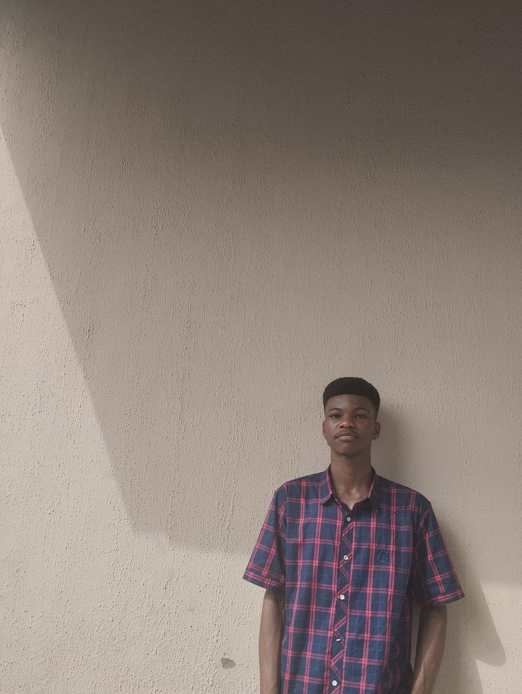

Okechukwu Kenneth .C.

Summary
I am a passionate full-stark developer in the making. I love to build interesting things on the web and fully dedicated to this passion. I am also a tutor and a lover of mathematics.
Education
- Basic Education - Queen of Peace, Nursery & Primary School (2006 - 2013)
- Seconadary Education - St Thomas Aquinas Seminary (2013 - 2016)
- Seconadary Education - St Peter's Seminary (2016 - 2019)
- Training and Certification - Verbum Networks (2021)
- Bsc Computer Science - University of Ibadan (2024 till date)
Work Experience
- Mathematics, Chemistry and Physics tutor - Primax Prevarsity (2024 till date)
Skill Set
- Oratory skills:
- Maths skills:
- English Speaking & Writing:
Awards and Certifications
- Full-stark Web Developer - Verbum Networks (2021)
Other